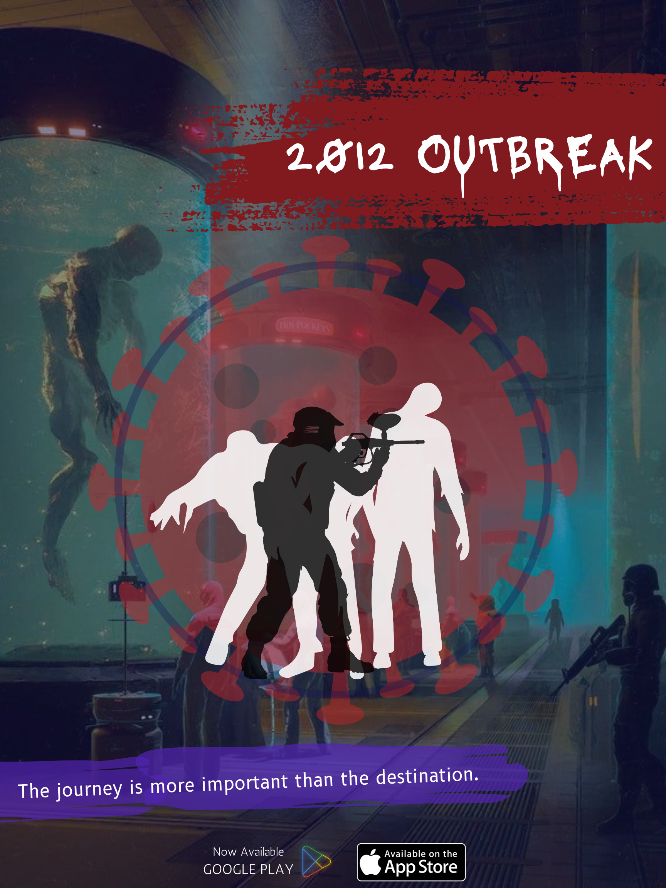

2012 OUTBREAK is a fun virtual video game that is set in the year 2012, as mentioned in the title of the game. The narrative describes a group of 12 scientists that visit an abandoned radioactive hospital to collect nuclear waste and process it in order to dispose of it safely and allow rebuilding in the area. They didn’t know that there was bacteria contaminating the halls of the hospital- so later, in the lab, when everyone took their suits off, the airborne bacteria spread from one team member who improperly wore their gear, to the whole team and they all became infected. When the bacteria multiplied and eventually settled in their brains, they turned into zombies with a human-like understanding of movement and behavior. There was a 13th scientist who was a part of their team but was unable to go with them to the hospital due to some health concerns, her genetics ended up being the reason behind her immunity to the zombie bacterium. When she realized what was going on, she alerted the whole building, all but 8 others became victims of the zombies. After evacuating and making base elsewhere, the 9 remaining human scientists became determined to kill the zombies and eradicate the bacteria by blowing up the labs.
This fun human vs. zombies survival TPS (third person shooter) game is made in 2D with PYGAME ZERO, but is also programmed to express 3D characteristics to enhance the experience of playing. It's a multiplayer game with a requirement of at least 2 or more players, the players can select buttons that indicate which team they're fighting on. Players are able to change their perspectives in the game to match the zombie storyline or the scientist storyline. The appearance of each player will vary depending on whether they're a human or zombie, the functions are mostly similar between the two, but the humans have a special tool that they can use during desperate times. This tool is the shake signal, which alerts everyone in the game of the player's position on the map by highlighting the character's surrounding area red. The purpose of this is to allow the humans to find one another and help each other out, but the disadvantage is that everyone else, including the zombies, know where they are.
Please note: The game is intended for an audience of 12 years or up.
